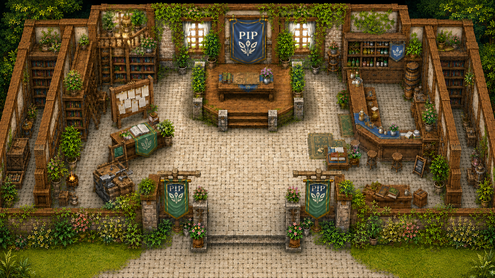

คลิกตัวละครเพื่อพูดคุย
สนทนากับเอเจนต์
ชื่อตัวละคร
บทบาท
พื้นที่
Agent Command Center
Step 1: เลือกประเภทงาน
Step 2: เขียนรายละเอียดงาน
Step 4: ส่งงาน
ยังไม่ได้เปิด Codex Bridge
สถานะล่าสุด
ยังไม่มีงานล่าสุด
Step 3: ตรวจคำสั่งที่จะส่ง